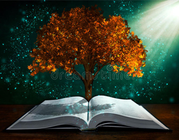

Área 1
A pessoa
Noção, funções, papéis, produção e consumo,
Reprodução social,novos modelos e problemas intergeracionais.
Família -uma noção
O que é Família？O conceito de família e como ele evoluiu ao longo do tempo e em diferentes culturas. Família é grupo de pessoas unidas por laços de parentesco, base da sociedade. Mudanças foram influenciadas por fatores demográficos, sociais, econômicos e culturais, como a participação feminina no trabalho e instrução.
1. Definição de Família:
· Grupo de pessoas unidas diretamente por laços de parentesco.
· Unidade social de base e pilar da vida em sociedade.
· Compartilha um espaço comum e é formada por indivíduos ligados por laços de sangue, casamento ou adoção.
Evolução e mudanças na Família:
· Constituição, dimensão, estrutura, tipologia e funções evoluíram ao longo do tempo e adaptaram-se às mudanças sociais e econômicas.
· Fatores demográficos, sociais, econômicos e culturais influenciaram diretamente essas mudanças.
2. Tipos de Família:
· Família nuclear: pai, mãe e filhos.
· Família extensa: inclui avós, tios, primos e demais parentes.
· Ambas as formas são importantes para a realização das funções atribuídas à família.
3. Casamento:
· Modelo socialmente reconhecido e aceito para a constituição de família.
· Monogamia é o padrão instituído nas sociedades ocidentais, enquanto em outras sociedades a poligamia é admitida.
· Em épocas passadas e ainda hoje em algumas sociedades, os casamentos são contratos baseados em interesses diversos e nem sempre o sentimento de amor é o elemento determinante.
Funções da família
Quais são as funções？As funções da família na sociedade e como elas têm evoluído ao longo do tempo e variam entre culturas，São mencionadas três principais funções: sexual e de reprodução, socialização e, atualmente, consumo econômico.
· Função sexual e de reprodução: regula a satisfação das necessidades sexuais e organiza a procriação.
· unção económica: atualmente, a família tem a função de consumo, enquanto que em épocas anteriores, e ainda em muitas comunidades menos industrializadas, a produção de bens para a subsistência dos membros era uma das suas funções principais.
· As funções da família evoluíram ao longo do tempo e variam com a cultura dos povos.
· A colaboração mais próxima entre gerações é um exemplo dessa evolução, como o cuidado com os idosos e a ajuda dos avós no acompanhamento dos netos.
Papéis da família
Que papéis são desempenhados？Os papéis tradicionais da família, como o pai sendo o provedor, a mãe cuidando da casa e dos filhos, e os avós auxiliando. As mudanças sociais trouxeram igualdade de gênero no mercado de trabalho e mais envolvimento dos avós na vida das famílias jovens, reforçando os laços entre gerações.
· Papéis desempenhados pela família variam com a cultura dos povos
· Na família tradicional, o pai é o provedor, a mãe cuida da casa e dos filhos, os filhos respeitam os pais e os avós ajudam em algumas funções
· A mudança social trouxe alterações nos papéis e estatutos da família
· A participação da mulher no trabalho e a igualdade de gênero foram conquistas importantes
· A participação masculina em tarefas antes exclusivas da mulher também aumentou
· A democratização da vida familiar é uma conquista das sociedades modernas
· Os avós têm um papel importante na educação e acompanhamento dos netos, e até na ajuda econômica aos jovens casais.
Família produz e consome.
Função na atividade económica?A evolução da função econômica da família ao longo do tempo. Antes da Revolução Industrial, a família era a unidade de produção e consumo, com todos os membros contribuindo para produzir bens para o sustento da família. Com a Revolução Industrial, houve uma mudança significativa, com a produção sendo transferida para fábricas e a família se tornando uma unidade de consumo.
· A família sempre teve papel na atividade econômica, produzindo e consumindo para sua sobrevivência;
· Antes da Revolução Industrial, a família era a unidade de produção e consumo, com todos os membros trabalhando juntos;
· Com a Revolução Industrial, a produção passou para as fábricas e a família se tornou unidade de consumo;
· A propriedade dos meios de produção foi concentrada nas mãos dos capitalistas;
· Houve uma divisão do trabalho por gênero, com os homens trabalhando fora e as mulheres cuidando da casa;
· O trabalhador passou a receber salário e usar para consumir produtos produzidos pelas empresas;
· Isso levou ao desenvolvimento da sociedade de consumo e ao consumismo.
Comparação entre família rural e urbana na atividade econômica:
· A família rural pode ainda ser uma unidade de produção, trabalhando em atividades como agricultura e criação de gado;
· Já a família urbana é predominantemente unidade de consumo, com membros trabalhando fora de casa e consumindo bens e serviços produzidos pelas empresas.
Família reproduz cultura
Que é reprodução social?O papel da família na reprodução social, abordando a sua função de socialização e como esta contribui para a assimilação dos modelos da sociedade. Também explora a socialização como uma forma de controlo social, que impede ou dificulta os desvios às normas culturais vigentes, e como um processo de aprendizagem de papéis sociais, facilitando a integração nos diversos grupos sociais.
· A família desempenha a função de socialização, transmitindo valores, modelos e práticas que são aprovados pela sociedade e necessários para a integração plena dos seus membros.
· A socialização é importante para a aprendizagem da cultura da sociedade e para a reprodução social.
· A socialização é um processo de aprendizagem de papéis sociais, facilitando a integração dos indivíduos nos diferentes grupos sociais.
· A socialização contribui para o controle social, dificultando os desvios às normas da cultura vigente.
· A escolha de profissões ainda está estreitamente ligada ao processo de socialização das mulheres.
· A família, por meio da socialização, contribui para a reprodução da sociedade em que se integra.
Novos modelos de família
Como as famílias diferem?A existência de novos modelos de família na sociedade atual, que se diferenciam do modelo tradicional composto por pai, mãe e filhos. Tais mudanças são resultado de fatores como a escolarização, emancipação feminina e aceitação do divórcio. Famílias homossexuais são exemplos de novos recompostas, monoparentais e modelos de família que mantêm a união com base no afeto e na vontade de construir uma vida em comum.
· Uma família é um grupo de indivíduos unidos por laços de parentesco.
· A forma como as famílias são organizadas varia de acordo com a cultura e a sociedade em que estão inseridas.
· A família extensa, em que vários parentes vivem juntos e dividem tarefas, era mais comum em tempos passados.
· Com a industrialização, a família nuclear - composta por pai, mãe e filhos - tornou-se mais dominante nas sociedades ocidentais.
· Mudanças recentes na sociedade, como a escolarização obrigatória, a igualdade de gênero no mercado de trabalho e a aceitação de diferentes orientações sexuais, levaram ao surgimento de novos modelos de família.
· Alguns desses novos modelos são as famílias recompostas, as famílias monoparentais e as famílias homossexuais.
· Embora as funções econômicas e de socialização continuem presentes em todas as famílias, a divisão de tarefas entre seus membros mudou, com maior participação das mulheres.
· As uniões de fato também são uma variante do modelo tradicional de família.
· O elemento comum em todas as famílias é a união baseada no afeto e na vontade de construir uma vida em comum.
Problemas intergeracionais
Problemas e conflito entre geraçõesProblemas intergeracionais na família, conflito entre subculturas das gerações. Violência verbal, psicológica e física, principalmente contra mulheres, idosos e crianças. Organizações combatem essas situações. É importante proteger os direitos das crianças e idosos, que muitas vezes são vítimas de abusos e negligência.
1. Problemas intergeracionais:
· Conflitos entre gerações na vida familiar devido a diferenças nas subculturas de cada membro.
· Situações recorrentes de confronto de subculturas específicas.
· Existência de conflitos mais intensos que resultam em violência verbal, psicológica e física.
· Violência doméstica como manifestação de poder sobre os mais fracos e indefesos.
· Abusos contra mulheres que ocorrem em todas as classes sociais, com maior predominância nos estratos mais desfavorecidos.
· Vergonha e controle social inibem a denúncia de abusos em estratos sociais mais elevados.
· Criação de organizações para responder a situações de abuso contra mulheres.
· Abusos contra crianças que abrangem negligência, maus tratos físicos, psicológicos, sexuais e exploração do trabalho infantil.
· Desrespeito pelos direitos da criança de crescer saudável, com afeto e em segurança.
· Reconhecimento da criança como um ser em desenvolvimento com direitos específicos.
· Idosos como outra face do problema, vulneráveis em famílias desestruturadas.
· Sentimento de inutilidade em idosos já reformados.
· Campanha institucional da Amnistia Internacional contra a violência doméstica.
2. APAV Apoio à Vítima:
· Organização que oferece apoio a vítimas de diferentes formas de violência, incluindo violência doméstica.
Área 2
A sociedade
A cidadania europeia,direitos de cidadania,
Dever de participação e conhecimento da história e funcionamento da União Europeia
{kind=link}
{kind=link}
{kind=link}
{kind=link}
{kind=link}
{kind=link}
{kind=link}
Área 3
O mundo
Da multiplicidade dos saberes à ciência
Relacionamentos de conhecimento - mítico-mágico, filosófico
-

Sujeito e objeto do conhecimento
O relacionamento entre um sujeito e um objeto do conhecimento é essencial para o ato de conhecer. O sujeito, que pode ser definido como a consciência ou subjetividade que busca conhecer, interage com o objeto, que é a realidade sendo investigada. Essa relação resulta no conhecimento, sendo o sujeito afetado pelo objeto e o objeto apropriado pelo sujeito. A gnosiologia, ou teoria do conhecimento, estuda essa relação e os elementos envolvidos: sujeito, objeto e a relação entre eles. O sujeito não é neutro, pois é influenciado por fatores sociais e culturais, e desempenha um papel ativo na construção do objeto. O objeto do conhecimento abrange todas as coisas materiais e imateriais que são objeto de pensamento.
-
Mítico-mágico,O saber acumulado
O conceito de soberania alimentar, que defende o direito das pessoas a terem acesso a alimentos de qualidade, produzidos de forma sustentável, respeitando os seres humanos e o ambiente. Destaca-se a importância das mulheres e dos povos indígenas como detentores de conhecimento sobre alimentação e agricultura. A soberania alimentar permite conservar, recuperar e desenvolver esses conhecimentos, garantindo a capacidade contínua de produzir alimentos. Também explora o tema do relacionamento mítico-mágico com o conhecimento. Destaca-se que o conhecimento é produzido a partir da necessidade de compreender o mundo, levando em consideração as circunstâncias da época, conhecimentos prévios e a forma específica de perceber e interpretar a realidade. São mencionadas diferentes formas de ver o mundo e produzir conhecimento, como a visão animista das tribos caçadoras e o conhecimento acumulado ao longo do tempo por grupos sociais subalternizados. Esse conhecimento acumulado tem sido valorizado em fóruns internacionais que defendem a sustentabilidade ambiental, a soberania alimentar e a justiça social. Esses conhecimentos tradicionais possibilitam a garantia de alimentos saudáveis, através de práticas como a conservação da água, a produção de frutas resistentes às mudanças climáticas, a criação de animais e o uso de plantas autóctones para preservar a saúde.
-
Relacionamento filosófico
O conceito de filosofia e explora seu relacionamento com o conhecimento. A filosofia é definida como a busca pela sabedoria e envolve reflexões sobre o ser e o agir. Os primeiros filósofos questionaram questões além dos fenômenos e aspiravam alcançar todas as formas de conhecimento. Filosofar é uma atividade humana que reflete sobre o ser e o agir, levando o sujeito a assumir responsabilidade. De acordo com Kant, a filosofia é uma luz que liberta o homem do estado de dependência do entendimento de outrem. Também menciona Hipátia de Alexandria, que se destacou na Matemática, Física e filosofia neoplatônica. Ela viveu em uma época em que as mulheres tinham poucas oportunidades, mas conseguiu se mover livremente nos domínios que eram tradicionalmente masculinos. O ato de conhecimento apresenta desafios, como sua origem na experiência, que deu origem ao empirismo. Além disso, há diferentes posições sobre o papel do sujeito e do objeto no conhecimento. O realismo defende a preponderância do objeto e rejeita interpretações que distorcem a realidade, enquanto o idealismo enfatiza a construção do objeto pelo sujeito. Menciona o Iluminismo, caracterizado por avanços científicos, ascensão da burguesia e incremento do liberalismo. Esse período valorizava a liberdade de investimento e comércio.
-
Relacionamento de senso comum
O conhecimento baseado no senso comum é discutido e sua relação com as representações sociais e estereótipos é explorada. Esse tipo de conhecimento refere-se a crenças, valores e opiniões intuitivas amplamente compartilhadas por um grupo social, mas que não são consideradas científicas. Essas crenças são transmitidas de forma acrítica e são consideradas verdadeiras, mesmo que não tenham sido estudadas ou refletidas criticamente. Exemplos desse tipo de conhecimento são mencionados, como a ideia de que o Sol gira em torno da Terra, que mulheres são mais adequadas para atividades domésticas e que homens são mais capacitados para certos cargos públicos. Essas crenças são baseadas em valores, estereótipos e nas representações sociais dominantes. O conhecimento científico, por outro lado, desafia essas verdades estabelecidas, questionando-as e oferecendo explicações baseadas em evidências e métodos de investigação. Esse tipo de conhecimento muitas vezes é considerado incômodo, pois coloca em xeque as hierarquias de poder e a ordem social estabelecida. Ao longo da história, filósofos e pensadores abordaram diversas questões sociais, fenômenos naturais e desigualdades, porém suas reflexões foram influenciadas pelo senso comum e limitadas a avaliações ético-valorativas.
-
Relacionamento científico
A construção da realidade pela ciência é discutida, destacando o método científico como um conjunto de etapas e regras fundamentais para a produção de conhecimento. René Descartes estabeleceu as regras desse método, que incluem a dúvida, análise, síntese, enumeração e rejeição de evidências falsas. A Matemática desempenha um papel crucial na ciência moderna, permitindo a quantificação rigorosa, a lógica da investigação e a representação da matéria. A ciência busca quantificar e simplificar fenômenos complexos, identificando regularidades e estabelecendo leis científicas. O método experimental, originado das contribuições de Galileu e Newton, é aplicado na física e também nas ciências sociais emergentes. Esse método envolve a observação, formulação de hipóteses, experimentação e verificação das hipóteses. Nas ciências sociais e humanas, o método experimental implica a coleta de dados para verificar a relação causal entre variáveis independentes e fatos observados.
-
O paradigma emergente
O paradigma é um conjunto de hipóteses fundamentais que guiam a pesquisa científica em uma determinada época. O paradigma dominante, surgido após a revolução científica dos séculos XVI e XVII, baseia-se na observação, experimentação e uso da Matemática para alcançar um conhecimento profundo e rigoroso da natureza. No entanto, o paradigma dominante foi questionado por descobertas científicas mais recentes, como as teorias de Einstein e a mecânica quântica, que trouxeram novas perspectivas sobre espaço, tempo e a natureza probabilística das leis físicas. Essas descobertas levantaram dúvidas sobre a universalidade das leis científicas e o rigor absoluto da Matemática. Como resultado, um novo paradigma emergente está surgindo, que busca dialogar com outras formas de conhecimento, incluindo o senso comum. Esse diálogo entre diferentes formas de conhecimento pode ter um impacto libertador e humanista. Além disso, há uma crescente reflexão epistemológica transdisciplinar que enfatiza a importância de considerar os contextos sociais em que a pesquisa científica é realizada e analisar os modelos de produção do conhecimento.
-
A ética e a ciência
A procura do conhecimento levanta questões éticas e implica a consideração de limites. A relação entre ciência e ética é complexa, pois a ciência busca a verdade e o conhecimento para compreender e dominar a natureza, a sociedade e o ser humano, enquanto a ética reflete sobre os princípios que guiam as práticas humanas, levando em conta a dignidade humana. No entanto, o desejo de dominação inerente à investigação científica pode entrar em conflito com princípios éticos e direitos humanos. Exemplos como o uso de animais em experimentos laboratoriais, a degradação do meio ambiente em decorrência de testes científicos e a experimentação em seres humanos exigem a intervenção de princípios que orientem a conduta humana. A ética nos convida a refletir sobre a utilização e aplicação dos conhecimentos científicos. Embora a verdade e as leis em si possam ser neutras, seu uso e aproveitamento são questões éticas. O exemplo da energia atômica é mencionado, pois pode ser usada como uma fonte de energia renovável ou como uma arma de destruição em massa. A ética nos ajuda a considerar os valores que podem orientar e condicionar a prática da pesquisa científica. Cada sociedade possui sua cultura e valores específicos, o que influencia a forma como a ciência é integrada nessa cultura. Por exemplo, no passado, as autópsias eram consideradas profanações e moralmente condenadas, mas na sociedade ocidental contemporânea isso não é mais o caso.